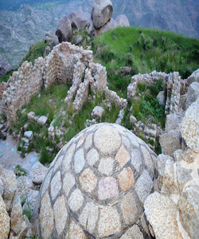

Ranigat (Pashto: راني ګټ) is a collection of 2nd century CE Buddhist ruins spread over an area of 4 square kilometers which dates from the Gandhara civilization. Ranigat is located in valley Buner of Pakistan's Khyber Pakhtunkhwa province. According to the archeologists, Ranigat remained the center of Buddhist art and culture for centuries. Ranigat, has been a celebrated part of folklore, with songs and stories having been written about it. Rani Gatt (lit. the queen of stones in a Pashto) is a 2500-year-old Buddhist archaeological site belonging to the Gandahara civilization located in district Buner of Khyber Pakhtunkhwa, Pakistan.
